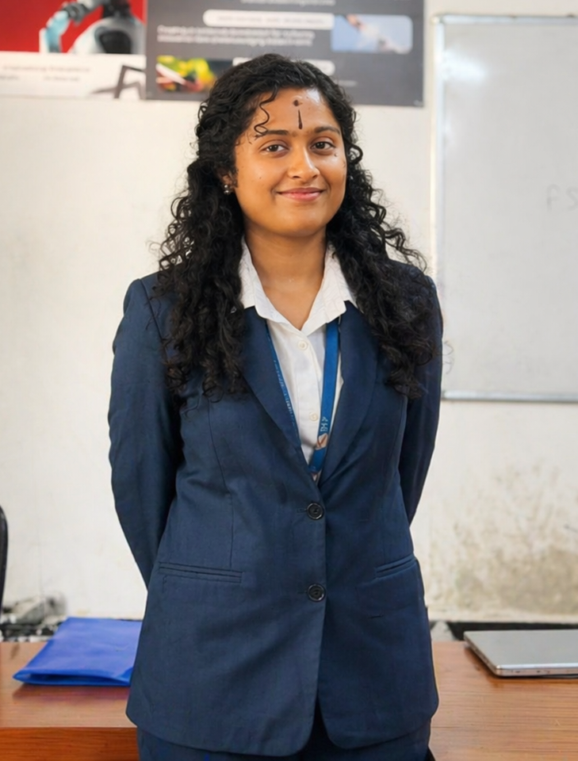

Building intelligent systems at the intersection of computer vision, NLP, and accessible technology. IEEE-published researcher. Passionate about AI that actually helps people.

I'm a Artificial Intelligence and Data Science student at Karpagam Institute of Technology, building systems at the intersection of deep learning, computer vision, and human-centred design. My work ranges from IEEE-published surveillance architectures to voice-controlled accessibility tools for blind developers.
Over the past two years, I've been building AI systems , not as academic exercises, but as things I genuinely wanted to exist. That approach has shaped how I think about data, models, and what it actually means for a system to work.
Outside of building, I present at international conferences, compete in national-level hackathons, and contribute to design-led initiatives aligned with Viksit Bharat 2047.